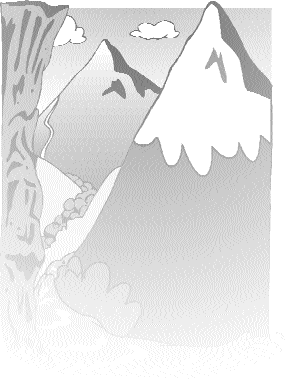

| Sur le chemin |
 Une fois, Maître a dit que l'esprit de la montagne et de l'eau, dans le roman intitulé Le voyage de l'Ouest étaient des métaphores faisant allusion à l'attachement des pratiquants spirituels pour les paysages magnifiques.
Il y a eu un temps où les disciples résidents vivaient dans des tentes. Mais, chaque fois que nous nous installions quelque part et que les fleurs ainsi que les arbres que nous avions plantés commençaient à peine à s'épanouir et à pousser admirablement, il était temps pour nous de déménager à nouveau. Plus tard, nous avons emménagé dans des grottes que nous avions construites nous-mêmes et nous étions tous excités à l'idée d'avoir, finalement, tous notre petit coin. Plusieurs d'entre nous s'étaient creusés la cervelle pour trouver des façons d'embellir là où nous vivions. Lorsque tout était presque en ordre, Maître a donné l'instruction : "Les hommes doivent échanger leurs habitations avec celles des femmes." Brusquement, nous n'avions plus nos propres grottes.
Lorsque nous étions sur le point de revêtir les nouveaux habits monastiques bleus et rouges, Maître a sagement et ingénieusement inversé les concepts "le rouge pour les femmes et le bleu pour les hommes". Ensuite, nous avons abandonné nos habits monastiques, ce qui a introduit une percée encore plus grande dans nos conceptions par rapport à la pratique spirituelle.
Plusieurs disciples responsables ont eu différentes tâches allant d'un jour à une semaine ou deux semaines à plusieurs mois ou années. Ceci était une autre façon de nous défaire de nos attachements pour la renommée et la position. Lorsque nous sommes inconnus, nous ne sommes pas conscients de notre désir de renommée ou de gains. Mais dès que nous les avons, nous en prenons immédiatement conscience. Le désir de la renommée et des gains reste parfois dissimulé. Par exemple, certaines personnes se font concurrences et sont fières de leur progrès spirituel, ne mangeant qu'un seul repas par jour et méditant toute la nuit sans avoir besoin de dormir. Après qu'ils aient pratiqué de cette façon pendant un certain temps, ils peuvent sembler tout-puissants dans leur pratique spirituelle, alors qu'en réalité, ils ont gagné intérieurement une fierté de plus en plus obstinée. Nous sommes très heureux d'avoir un Maître vivant qui n'hésite pas à rompre à temps notre ignorance ainsi que nos attachements.
Maître a aussi utilisé la cuisine comme salle de classe, pour nous permettre de comprendre que la véritable renonciation est la possession sans attachements. Lorsque nous nous sommes joints au groupe monastique, dans les premiers temps, la cuisine n'était rien de plus qu'un morceau de toile étendu au-dessus de deux grands woks. Plus tard, lorsque les créations artistiques de Maître ont rapporté de l'argent, Elle a construit pour nous une magnifique cuisine, toute équipée d'équipements modernes ainsi que d'un canapé. Nous étions ravis à l'idée que nous n'aurions plus à endurer la pluie et le vent. Cependant, le plaisir n'a duré que quelques mois avant de partir pour le Cambodge, où nous sommes revenus à la vie simple d'auparavant, mais nous étions heureux comme toujours.
Avant de suivre Maître, nous pensions que le modèle idéal de pratique spirituelle était de vivre une vie économe et simple, paraissant sincère et méditant assidûment. Au départ, lorsque nous avons renoncé à la vie laïque, nous pensions que nous allions vivre dans un endroit reculé et silencieux pour nous améliorer nous-mêmes. Cependant, dès que nous avons réalisé profondément que la vie simple était ce qu'il y avait de plus confortable, inopinément, Maître nous a renvoyé dans la réalité mondaine pour nous permettre d'apprendre plus de leçons. Pour être en accord avec la société, nous avons commencé à porter des costumes avec des cravates, ce qui était pour nous un grand sacrifice parce que nous renoncions à ce que nous aimions vraiment. Toutefois, tandis que le temps s'écoulait, nous avons graduellement réalisé qu'il n'y avait rien de tel que la vie mondaine, que tout ce que nous rencontrons dans la vie quotidienne est une leçon pour la pratique spirituelle. Là encore, nous reprenions, une à une, les choses auxquelles nous avions renoncé auparavant.
Nous savons que Maître préfère s'habiller simplement mais, afin de sauver des êtres sensibles, Elle porte des vêtements et des bijoux splendides, ce qui est comme être enchaîné. En renonçant au monde tout en restant actif dans la société, Elle est vraiment le sommet de la perfection. Les Maîtres d'autrefois ont sacrifié leur réputation, ont été condamnés pour manquer de compassion, laissant les disciples geler dans la neige, brûlant les bras de leurs disciples pour effacer leurs souffrances en enfer, ont prétendu manger de la viande et boire de l'alcool, ont été l'objet de critiques et de doutes de leurs disciples, tout cela pour rompre leurs idées préconçues au sujet de la pratique spirituelle. Nous pouvons comprendre les efforts soignés de ces anciens Maîtres. Cependant, nous doutons à savoir si nous pouvons, à jamais ou n'importe où, rencontrer une autre comme le Maître Suprême Ching Hai, qui a sacrifié Sa propre réputation et fait tant de choses auxquelles d'autres pratiquants spirituels auraient voulu renoncer, seulement pour élever leur niveau spirituel.
Depuis les temps anciens, tous les Maîtres illuminés ont insisté sur le fait que la pratique spirituelle nécessite trois aspects : être ordinaire, être assidu et être illuminé. Pour la plupart des pratiquants spirituels, l'assiduité est devenue la mesure du progrès spirituel, tandis que les deux autres aspects sont oubliés. Seulement un être pleinement illuminé peut être réellement ordinaire. C'est pourquoi nous disons qu'une personne de grande sagesse paraît souvent lente. Seulement alors, une personne peut être dans la lumière tandis qu'elle est dans la saleté. Nous ne pouvons pas être ordinaires lorsque nous avons toujours des idées préconçues à propos de la pratique spirituelle, lorsque nous avons peur des commentaires des autres et lorsque nous vivons toujours d'après l'opinion des gens en ce qui concerne le vrai et le faux, le bon et le mauvais. De même, nous cadrons notre Maître à l'intérieur de nos idées préconçues. Lorsque Ses actions sortent à l'extérieur de notre cadre préconçu, nous La critiquons implacablement, oubliant que la pratique spirituelle n'est pas parfaite sans être ordinaire.
Le Sûtra du Lotus cite très clairement que les Bouddhas (les êtres complètement illuminés ) peuvent se transformer en toutes sortes d'êtres incluant les dieux, les fantômes, les rois, les fonctionnaires, les personnes ordinaires, les épouses ainsi que les serviteurs afin de délivrer les êtres sensibles. Aussi longtemps que cela bénéficie les êtres sensibles, le concept d'être ordinaire ou pas n'existe pas. Maître est un modèle exemplaire pour délivrer les êtres sensibles à travers les chansons, la danse, les compositions musicales, les jeux d'échecs, la poésie, la peinture et les vêtements. En effet, Elle est l'interprétation la plus réaliste et la plus parfaite du Sûtra du Lotus.